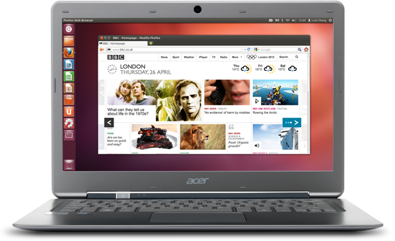
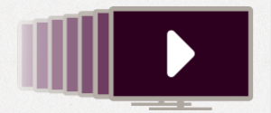
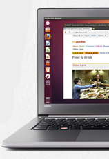

Home
Ubuntu
Business
Equipment
Cloud Computing
Download
Support
Project
Community
Partners
Store
Proven. Practical.
Precise.
Choose Ubuntu 12.04 LTS
for long-term deployments.
Read more>

What is Ubuntu?
Ubuntu is the world's favourite free operating system, with more than 20 million people preferring it to commercial alternatives.
Find out why>
Make the most of Ubuntu
We record our live webinars so you can always stay up-to-date.
Watch them here>

Your wish is our command
Download Ubuntu 12.10, featuring web app integration and online search results delivered direct to your desktop.
Find out why>

Ubuntu
Features
What's new?
Why is it free?
Why use Ubuntu?
Take the tour
Business
Desktop
Server
Landscape
Advantage
Case studies
Contact Canonical
Insights blog
Devices
Ubuntu for Android
Ubuntu TV
Backed by Canonical
Cloud
Insights
Public cloud
Private cloud
Orchestration
Solutions
Technical resources
Download
Desktop
Server
Cloud
Support
Community
Security notices
Project
About Ubuntu
Canonical and Ubuntu
Ubuntu font
Community
Get involved
Report a problem
Stay connected
Partners
Find a partner
Certified software
Certified hardware
Component catalog
Further information
Contact us
Trademark & copyright
policy
Privacy Policy
Legal information
Careers
Canonical news feed